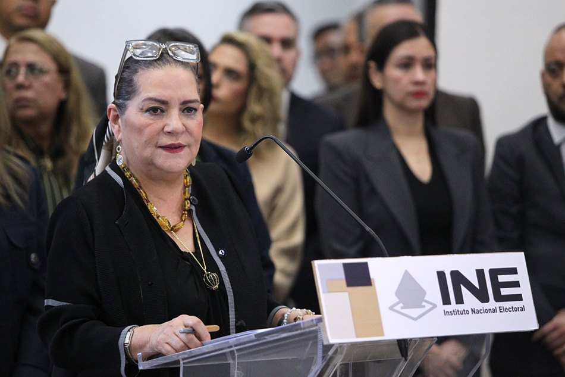

OKpolítico
OKpolíticoRenuncia de Guadalupe Taddei y la nueva presidenta del INE

En este video de OKpolítico explicamos la renuncia de Guadalupe Taddei del INE, los contratos cuestionados, la “limpia” interna encabezada por Blanca Yassahara Cruz García y el proceso legislativo para elegir a la presidenta definitiva. Se contrastan los comunicados oficiales con los hallazgos de la
▶ Ver este video en YouTube y suscríbete
Renuncia de Guadalupe Taddei
El domingo 26 de octubre de 2026 Guadalupe Taddei Zavala presentó su renuncia a la presidencia del Instituto Nacional Electoral (INE). La dimisión se dio en medio de denuncias de presunta corrupción, contratos irregulares y posibles conflictos de interés que habían sido publicados por varios medios.
La salida se produce con el Proceso Electoral Federal 2026-2027 ya en marcha desde el 10 de septiembre. Taddei había asumido la presidencia del INE en 2022, tras una amplia trayectoria en organismos electorales estatales, lo que hizo que su renuncia generara un fuerte impacto institucional.
Según informó la cadena CNN Español, la presidenta Claudia Sheinbaum respaldó la renuncia y pidió que continúen las auditorías del Instituto. La propia Taddei, por su parte, defendió la legalidad de los contratos y sostuvo que su salida busca proteger la estabilidad del organismo.
En declaraciones posteriores, Sheinbaum subrayó la necesidad de que el INE mantenga su independencia y transparencia durante el proceso de transición.
Contratos y conflictos de interés
La Auditoría Superior de la Federación (ASF) confirmó el 24 de octubre que estaba investigando irregularidades en contratos del INE por 514 millones de pesos, adjudicados a empresas vinculadas al empresario José Alfredo Hernández Casillas. Entre los hallazgos destaca que Corporativo Zeg, con solo cinco empleados registrados,
obtuvo contratos por 184 millones de pesos y transfirió 167 millones a otras cuatro compañías, lo que la ASF describió como una triangulación de fondos.
El informe de la ASF detalla además que la falta de competencia en los procesos licitatorios vulneró la normativa de contratación pública. El informe de la ASF también señaló la existencia de 23 contratos sin publicación en la Plataforma de Transparencia y 7 licitaciones cuyo valor superó el 30 % del presupuesto de la Oficina de Tecnologías de la Información,
según la investigación de Animal Político. Según Animal Político, los montos involucrados suman varios miles de millones de pesos, una cifra que supera ampliamente el límite establecido para adquisiciones sin licitación directa.
La falta de documentación impide rastrear el destino final de los recursos, lo que genera dudas sobre la integridad de los procesos de contratación.
Antecedentes en organismos electorales locales
El patrón de adjudicaciones se remonta a la gestión de Taddei en Sonora, donde el Instituto Electoral estatal otorgó a Cajas Graf un contrato por 46 millones 879 mil pesos. Cajas Graf está apoderada por José Alfredo Hernández Casillas y su hermano Raymundo Francisco, lo que sugiere una red de relaciones que se extendió al nivel federal.
Este contrato fue señalado en el informe de la ASF como uno de los primeros indicios de posibles conflictos de interés. En 2022, mientras Taddei presidía el Instituto Sonorense de Transparencia,
el organismo firmó un arrendamiento anual de 1 millón 231 mil pesos con Inmobiliaria Alta Sierra, vinculada a la familia del gobernador Alfonso Durazo. La senadora panista Lilly Téllez solicitó en 2025 la comparecencia de Taddei por ese contrato, petición que la bancada de Morena archivó en el Senado.
Este episodio fue documentado en el expediente del Senado de la República, que registró la solicitud y su posterior archivo. En Oaxaca, la secretaria ejecutiva Iliana Araceli Hernández Gómez asignó en 2024 un contrato de 32 millones 426 mil pesos a Corporativo Zeg,
empresa hermana de Cajas Graf, y posteriormente fue incorporada a la Unidad Técnica de Igualdad de Género del INE por Taddei. El contrato fue mencionado en la cobertura de Infobae, que señaló la coincidencia de los beneficiarios y la falta de competencia en la licitación.
Limpieza interna y renuncias de funcionarios
Blanca Yassahara Cruz García tomó protesta como presidenta provisional del INE el 27 de octubre de 2026, según informó El Imparcial. En su primer comunicado ordenó la detención temporal de la entrega de nuevos contratos y la revisión de los procesos en curso.
Además, anunció la creación de una mesa de trabajo con la Oficina de Ética y el Órgano Interno de Control (OIC) para garantizar la transparencia de la revisión. Cruz García solicitó la renuncia de tres directivos nombrados por Taddei: Alejandro Pérez de Acha (Unidad Técnica de Servicios de Informática),
Iliana Araceli Hernández Gómez (Unidad Técnica de Igualdad de Género y No Discriminación) y Mario Alfonso Burciaga Esparza (director de Recursos Materiales). La información
El Instituto anunció que los procesos de contratación se revisarán caso por caso bajo la supervisión de la Oficina de Ética y del Órgano Interno de Control (OIC). Los servicios esenciales, como la producción de la credencial para votar, quedarán exceptuados, garantizando la continuidad del registro electoral.
La Oficina de Ética emitió un comunicado indicando que los resultados de la revisión se publicarán antes de la designación definitiva.
Proceso de selección de la presidenta definitiva
El artículo 41, numeral 5, de la Ley General de Instituciones y Procedimientos Electorales (LGIPE) establece que, ante la falta absoluta del titular, el Consejo General del INE debe elegir de entre sus integrantes a quien asuma la presidencia de manera provisional.
Las diez consejerías en funciones deben sesionar en un plazo no mayor a 24 horas y elegir por mayoría de votos al perfil provisional. Esta disposición garantiza la continuidad del órgano electoral sin depender de decisiones partidistas.
La designación definitiva corresponde al Congreso de la Unión. La Junta de Coordinación Política (Jucopo) de la Cámara de Diputados, presidida por Ricardo Monreal Ávila,
abrirá una convocatoria pública y conformará un Comité Técnico de Evaluación integrado por cinco personas: tres nombradas por la Jucopo y dos por la Comisión Nacional de los Derechos Humanos (CNDH). El reglamento interno del INE detalla que el comité evaluará los perfiles, aplicará exámenes de conocimientos y valorará la idoneidad ética y profesional de los aspirantes.
El comité técnico evaluará perfiles, aplicará exámenes de conocimientos y valorará la idoneidad ética y profesional de los aspirantes. Posteriormente remitirá una lista de cinco candidatos a la Jucopo, que propondrá un perfil al Pleno de la Cámara.
Para la ratificación se requiere el voto de dos terceras partes de los legisladores presentes, según el Reglamento interno del INE. Este mecanismo busca asegurar que la futura presidenta cuente con amplio respaldo parlamentario y cumpla con los principios de neutralidad política.
El proceso completo, desde la renuncia hasta la designación definitiva, se estima que tomará entre cuatro y cinco semanas, según el cronograma interno del INE. Durante este periodo, el Consejo General seguirá operando en forma colegiada, garantizando la continuidad de las funciones electorales sin interrupciones.
Contraste entre discurso oficial y datos independientes
El INE ha declarado que la revisión de los contratos será total, que se harán públicos todos los documentos y que la “limpia” interna garantizará la transparencia. La Oficina de Ética, en comunicado, aseguró que los resultados se publicarán antes de la designación definitiva, con el objetivo de restaurar la confianza ciudadana.
Sin embargo, la ASF informó que ya cuenta con “elementos e indicios” de irregularidades en 23 contratos sin publicación y que la triangulación de fondos involucra a empresas vinculadas a la familia de Taddei.
Además, el informe de la CNDH mostró que Taddei mantenía una participación accionarial del 4,7 % en DataCorp México, empresa contratada por el INE para actualizar la base de datos de electores, lo que contraviene la normativa interna del organismo.
Un estudio de CONEVAL sobre la confianza electoral reveló que, pese a la “limpia”, la percepción de corrupción en el INE cayó solo de 42 % a 35 % entre febrero y julio de 2024,
permaneciendo por encima del promedio de otras instituciones públicas (28 %). Estos datos indican que la percepción ciudadana aún muestra escepticismo respecto a la gestión del organismo.
Impacto y próximos pasos
La vacante del INE se produce a menos de ocho meses de los comicios federales de junio de 2027. La falta de una presidenta titular podría generar retrasos en la organización de las elecciones, aunque el Consejo General sigue operando de forma colegiada bajo la presidencia provisional.
El calendario electoral establece que el registro de candidatos inicia en enero de 2027, por lo que la estabilidad del INE es crucial para cumplir con los plazos legales. Los analistas políticos, como Juan Hernández de CNN Español, advierten que la credibilidad del INE dependerá de la rapidez y la transparencia del proceso de selección.
Estas observaciones subrayan la importancia de un proceso libre de presiones partidistas. Mientras tanto, la ASF continuará su auditoría forense y el OIC emitirá informes trimestrales.
La sociedad civil y los partidos políticos seguirán vigilando el proceso a través de la Plataforma de Transparencia del INE y de los observatorios de transparencia. La participación ciudadana será determinante para asegurar que la nueva presidenta cumpla con los estándares de integridad y eficiencia requeridos por la legislación electoral.
Sigue viendo
- 📺 1818 (I): La Aparente Pacificación y la Sombra de la Paciencia
- 📺 1817 (III): La Muerte de Mina, el Exilio de Mier y la Resistencia que No Cede
- 📺 Exceso de naturalizados en Liga MX: Hugo Sánchez vs dirigentes
- 📰 Fobaproa: La deuda que México pagará hasta 2070
- 📰 El sistema de pensiones en México explicado desde cero
Fuentes
- Infobae — https://www.infobae.com/mexico/2026/10/26/contratos-choferes-fantasma-y-fiestas-
- Imagen Radio — https://www.imagenradio.com.mx/noticias/que-pasa-ine-renuncia-guadalupe-taddei-c
- CNN Español — https://cnnespanol.cnn.com/2026/10/26/mexico/video/renuncia-presidenta-ine-presu
- Política Expansión — https://politica.expansion.mx/mexico/2026/10/26/los-contratos-detras-de-la-salid
- El Imparcial — https://www.elimparcial.com/mexico/2026/10/27/el-ine-pide-la-renuncia-de-tres-fu
- Excélsior — https://www.excelsior.com.mx/nacional/arranca-limpia-ine-tras-salida-taddei-pres
- CNDH — https://www.cndh.org.mx/informes/etica-conflicto-intereses-2024.pdf
- Animal Político — https://www.animalpolitico.com/2024/04/contratos-fantasma-ine/
- El Universal — https://www.eluniversal.com.mx/nacion/ine-beneficiarios-2024/
- CONEVAL — https://www.coneval.org.mx/publicaciones/estudios/2024/impacto-corrupcion-ine.pd
- ASF — https://www.asf.gob.mx/informes/ine-contrataciones-2024.pdf
- Reforma — https://www.reforma.com/nacional/escandalo-renuncia-taddei/2024/06/09/
- Observatorio de Transparencia — https://transparencia.org.mx/datos/ine-contrataciones-2024.csv
- Reglamento interno del INE — https://www.ine.mx/reglamento-interno.pdf
- Senado de la República — https://www.senado.gob.mx/diario/2024/07/30/ratificacion-presidenta-ine.pdf